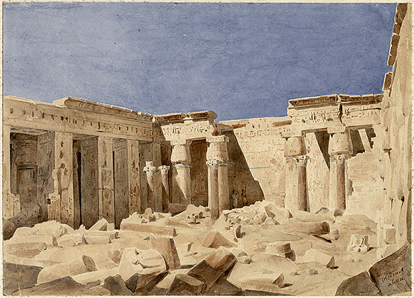

Alejandra Cornelia Dean
Archival Student & Administrative Assistant
Hello from Somerville, MA! I'm currently enrolled as a student in the archives management concentration at Simmons in the School of Library and Information Science. I'm finishing up my third semester, and am so excited to apply the theory and practice I've been learning to a job in archives in the future. Before coming to Simmons, I grew up in Berkeley, CA...that hallowed ground where I encountered my first boba tea. I started my undergraduate career in 2009 at Harvard and graduated four years later with a B.A. in History of Art and Architecture (and regretfully one credit shy of a minor in Archaeology and Visual Studies). My field of focus in art history was modern and contemporary art, and I wrote my thesis on British conceptual and land-artist Richard Long. I spent the summer of my junior year researching my paper in London while interning in the curatorial offices of the Divison of Islamic Art at the British Museum. It was there that I decided I wanted to pursue working in archives!
Interning at the British Museum was a formative experience for me, and brought the possibility of archival work to my attention. While interning at the BM, I received the opportunity to visit the Griffith Institute of Egyptology at the University of Oxford. Browsing through the archive there, which includes collections like Hector Horeau's watercolors of Egypt (painted in 1838--see below), inspired me to enter the field as a graduate student at Simmons. After completing my degree program at Simmons, I plan on applying for jobs within smaller institutions like the Griffith Insitute that would enable me to curate and organize small exhibitions of materials for the public. Community outreach is a huge professional goal of mine, and I love the idea of being able to promote the use and exploration of archival collections through curation.
In addition to studying at Simmons part-time, I'm currently employed in the Department of East Asian Languages and Civilizations at Harvard as a program assistant. I've worked for EALC for three years and counting, and my primary responsibilities are supporting our language faculty in the Chinese, Japanese, Korean, and Vietnamese programs. I love my department and colleagues, so leaving EALC after receiving my MLS will be bittersweet. Until then, school and work are treating me pretty well!
When I'm not attending class or sitting at my desk at work, you can typically find me walking around my neighborhood in Union Square, frequenting my local coffee shop with a book or comic in tow, sketching at Prospect Hill Park, running on the Somerville Community Path, cooking for friends, and speaking Spanish in my newly-established Spanish Club! I love all things 80s sci fi (cf: Stranger Things on Netflix) and fantasy as a genre. Check out my page under my about me section on what books I've been reading for sci fi and fantasy recommendations.